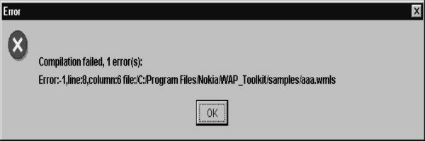

10
Miscellaneous
This is the final chapter
of the book and contains a medley of a vast amount of miscellaneous information
that could not be classified into any of the earlier chapters. It covers a vast
of topics that include creation and initialization of variables, the lifetime
and scope of variables, the concept of a namespace, the mechanism for
displaying special characters, the concept of unicode, the break and continue
statements, the function of operators such as the comma operator, the NOT
operator, the + operator, the ++ opeartor, the ? : construct , the difference
between = and = =, precedence of operators and error checking. Without further
ado, we shall go right ahead with the explanations since we have a lot of
ground to cover.
When you create a variable,
you can initialize it at the same time. You can subsequently change the value
of the variable, but you cannot create it yet again in the same program.
aaa.wmls
extern function abc()
{
var i = 10;
i = i + 10;
var i = "no";
Dialogs.alert(aa);
}
|
Screen 10. 1 |
In the above example, line
3 will generate an error because the variable i has been declared again.
You can create a new variable
anywhere in the program in WMLScript. You don't need to create all the
variables at the beginning of the program, as some programming languages like C
compel you to.
The next example shows that
you can create a variable in an if statement also. Here, the program creates a
variable z within the if statement. However, an error is generated when the
program tries to create the variable z again in the else statement also,
because the same variable cannot be created twice.
aaa.wmls
extern function abc()
{
var aa;
var i = 10;
if ( i >=5 )
var z = 10;
else
var z = 20;
}
|
 |
|
Screen 10. 2 |
Logically, either the if statement
will get called or the else statement gets called. Therefore, the variable will
get created only once. But, this logic is not applied by the compiler which
generates an error.
The next example shows that
in the if statement, the variables y and z are created. If you create a
variable and do not initialise it with a value, its value will be blank by
default. If you pass this uninitialised variable as a parameter to the function
String.format, the function will also consider its value to be blank by
default. But in this case, you would have realised that the variable z doesn't
get created at all because the else statement does not get executed at all.
Even then, no error is generated when the String.format function is called.
Therefore, the Dialogs.alert does not get called.
aaa.wmls
extern function abc()
{
var aa;
var i = 10;
if ( i >=5 )
var y = 10;
else
var z = 20;
aa = String.format("%d..",z);
Dialogs.alert(aa);
}
The variable y does not
create any problem. Since, the else statement does not get called, the variable
z doesn't get created at all and hence, it has an invalid value. If the
variable z had been created and not initialized, it would have had NULL
value.
You can create variables
anywhere in the program. Furthermore, the variable is visible or available to
the program, from the place from which it has been created. This rule has the
following repercussions:
Variables aa and i are
available to the if statement and beyond.
Variable z is available to the
else statement and beyond.
The variables aa, i, y and
z are available to the String.format function.
So, to sum up,
· If you create a variable
and don't initialize it, its value will be NULL.
· If you use this
uninitialised variable, its value will be invalid.
· You can create a variable
wherever you want, in the program. However, it is preferable to create it initially, at the top.
· The scope or the lifetime
of a variable is from the point it is created, to the end of the program.
The following program is
very elementary. Here, we have initialized aa and bb to the value of 20.
|
Screen 10. 3 |
aaa.wmls
extern function abc()
{
var aa,bb,cc;
aa = 10;
bb = 20;
aa = bb;
bb = 30;
cc = String.format("%d..",aa);
Dialogs.alert(cc);
}
When the statement aa=bb is
executed, the values of aa and bb are 20 each. Thereafter, when the value of bb
is changed to 30, it does not alter the value of the variable aa. There is no
link between aa and bb at this stage.
In the following example,
we have a WML file where we have initialized the variable aa to
"hell".
a11.wml
<?xml version="1.0"?>
<!DOCTYPE wml PUBLIC "-//WAPFORUM//DTD WML 1.1//EN" "http://www.wapforum.org/DTD/wml_1.1.xml">
<wml>
<card newcontext="true">
<do type="xx">
<go href="aaa.wmls#abc()">
<setvar name="aa" value ="hell"/>
</go>
</do>
<p>
Hello $aa
</p>
</card>
</wml>
We are displaying
"Hello $aa". Click on Options and start rolling.
|
Screen 10. 4 |
aaa.wmls
extern function abc()
{
var aa = 10;
WMLBrowser.setVar("aa","20");
aa = 30;
WMLBrowser.refresh();
}
We have created a variable
called aa and then using the function setVar, we have initialised the value of
aa to 20. Thereafter, the program once again initializes the variable aa to 30.
What we are trying to demonstrate here is that the variable aa in WMLScript is
different from the variable aa of WML. The only way you can change the variable
aa of WMLScript is by using setVar.
If you remove this
WMLBrowser, and initialize aa to 10, the value of aa would remain as
"hell". Only when you use setVar, the value of aa becomes 20. This
means that the variable aa in WMLScript has nothing in common with the variable
aa in WML.
Calling a Function From compiled WMLScript File
So far, we have learnt how
to call a function from WML, and how to call one function from another
function. Now, we shall see how to call a function from another WMLScript file.
aaa.wmls
use url zzz "file:/C:/Program Files/Nokia/Nokia WAP
Toolkit/samples/a111.wmlsc";
extern function abc() {
zzz#pqr();
}
a111.wmls
extern function pqr()
{
Dialogs.alert("pqr1");
}
|
|
The syntax use is called a
pragma. You can have different texts after use. Here we have used url. You can also
use words like access. Thereafter, we have used the text zzz, which is just a
name. The zzz represents a url in this example. A url is the name of a
compilation unit. Remember, we cannot say wmls because what it requires is a
compiled version of the script and not the text version.
Next, we have used the word
file because that's the location from where we want the requisite information.
We could have used http:// if we wanted to obtain the information from the
Internet. In order to call a function from the WMLScript file a111.wmls, you
can simply use zzz# followed by pqr. Do not forget to compile the file
a111.wmls.
What is a namespace ?
A namespace has a specific
connotation in WMLScript. A namespace is the nomenclature for a specific area
in memory. Variables and functions have names. WMLScript stores these names in
different parts of memory, each of which has a different namespace. Due to
this, we say that each of these variables or functions has a different
namespace. A function, a variable and a pragma can have the same name because
these names are stored in different parts of memory, i.e. they have different
namespaces. But, the names of parameters, functions and variables cannot be the
same because they have a common namespace.
a11.wml
<?xml version="1.0"?>
<!DOCTYPE wml PUBLIC "-//WAPFORUM//DTD WML 1.1//EN" "http://www.wapforum.org/DTD/wml_1.1.xml">
<wml>
<card newcontext="true">
<do type="xx">
<go href="aaa.wmls#zzz()">
<setvar name="aa" value ="hell"/>
</go>
</do>
<p>
Hello $aa
</p>
</card>
</wml>
aaa.wmls
use url zzz "http://toolkit/C:/Progra~1/Nokia/WAP_Toolkit/samples/a111.wmlsc";
extern function zzz() {
var zzz = 10;
zzz#zzz(zzz);
}
|
Screen 10. 7 |
a111.wmlsc
extern function zzz(aaa)
{
var bbb ;
bbb = String.format("%d..",aaa);
Dialogs.alert(bbb);
}
In case you don’t see the
output as we shown you, select the Messages tab and check the Detail.option. You
wiill see the url that Nokia frames to pick up the files. Add the same url in
doublequotes on the first line. Note the file is a111.wmlsc.
In the above example, we
have a pragma called zzz, a function called zzz and a variable called zzz. This
does not generate any error as this is valid, since they all have different
namespaces.
In the following program,
we have a variable j in the for loop. Everytime the for loop does an iteration,
the variable j gets created and initialized to the value of 20.
|
Screen 10. 8 |
aaa.wmls
extern function abc() {
var i,aa;
for(i=0;i<=5;i++)
{
var j=20;
aa=String.format("%d",j);
Dialogs.alert(aa);
}
}
If you want to display
certain special characters, you have to prefix them with a backslash. Some of
these special characters are as follows:
\\ - To display a backslash.
\n - Represents a new line.
\b - Represents a backspace
\t - Represents a
tab.
You should try it out in
other user agents, since all of them don't work in Nokia.
|
Screen 10. 9 |
aaa.wmls
extern function abc()
{
Dialogs.alert("hi\tbye");
}
If you want to represent a
number in hexadecimal value, you have to prefix it with \x. If you want to
represent it in ASCII value, you have to use its ASCII value.
For example,
· The hexadecimal value of
the character A is \x41.
· The ASCII value of the
character A is 65.
|
Screen 10. 10 |
aaa.wmls
extern function abc()
{
Dialogs.alert("hi\x41bye");
}
If you want to represent a
character in unicode, you have to prefix it with \u00. It is similar to the
hexadecimal format, but instead of an 8 bit number, it uses a 16 bit number.
|
Screen 10. 11 |
aaa.wmls
extern function abc()
{
Dialogs.alert("hi\u0042bye");
}
Unicode
What is meant by unicode? It
is a standard that the computer industry came up with, so that they could
ensure that all languages in the world could be expressed on a computer. There
are certain languages like Chinese and Japanese that are very visual in nature
and have a very large character set. ASCII is adequate in expressing the
letters of the English alphabet, but not good enough for express these visual
languages. Thus, the unicode standard was established to enable the characters
of these visual languages to be represented on the computer screen.
break
There is a construct called
break. It is used to break out of a for loop or a while loop. If you are within
a loop and for some reason, you want to get out of the loop without waiting for
the loop condition to evaluate to a false value, break can be used.
|
Screen 10. 12 |
aaa.wmls
extern function abc()
{
var z,aa;
for ( z = 1 ; z <= 5 ; z++)
{
if ( z == 2)
break;
aa = String.format("%d..",z);
Dialogs.alert(aa);
}
}
In the above example, when
z reaches the value of 2, the break statement will get executed and the program
will go out of the for loop. Normally, every for or while loop has an exit condition
which when false, takes the program out of the loop. But if, for any reason,
you don't want to wait for that condition to be false, you can use the break
statement to prematurely break out of the loop. In the above example, since the
program exits from the loop as soon as the value of z equals 2, you get to see
the Dialogs.alert only once.
The reverse of the break
statement is the continue statement. When a program reaches the continue
statement in a for or a while loop, the program does not complete the rest of
the for or while loop, but returns to
the beginning of the loop without executing any of the remaining
statements of the loop.
aaa.wmls
extern function abc()
{
var z,aa;
for ( z = 1 ; z <= 5 ; z++)
{
if ( z == 2)
continue ;
aa = String.format("%d..",z);
Dialogs.alert(aa);
}
}
|
|
Initially, when the value
of z is 1, the if statement evaluates to false and hence, the continue statement
does not get executed. When the value of z becomes 2, the continue statement
gets executed and takes the control back to the beginning of the for loop. As a
result, the 2 lines following the continue statement, upto the closing brace of
the for statement, don't get called. The output will be 1 3 4 5.
Thus, the break statement
gets you out of a loop and a continue statement takes you back to the beginning
of the loop.
|
Screen 10. 15 |
aaa.wmls
extern function abc()
{
var z,aa;
for ( z = 1 ; z <= 5 ; z++)
{
if ( z = 2)
break;
aa = String.format("%d..",z);
Dialogs.alert(aa);
}
aa = String.format("%d",z);
Dialogs.alert(aa);
}
There is a major difference
between the equal to sign i.e. = ,and the double equal to sign i.e. = =.
· The = sign is used for
initialisation of the value of a variable.
· The = = sign is used to
verify whether the values on both sides of this symbol are equal in value or
not.
In the above example, z is
initialized to 1 at the start of the loop. The if statement checks whether the
value of z is equal to 2 or not. Since it is not, the break statement does not
get executed.
In the next iteration, the
value of z becomes 2 and the if statement evaluates to true. Thus, the break
statement gets executed and the program exits from the loop.
The program reaches the
function String.format which displays the value of z as 2.
The + operator
In the context of strings,
the + operator is used to concatenate strings. For example, if you use
"hi"+"bye", the result will be "hibye".
|
Screen 10. 16 |
aaa.wmls
extern function abc()
{
Dialogs.alert("hi" + "bye");
}
The NOT sign is very useful
because it inverts the value of the variable it acts upon; in other words, if
the value of the variable is true, it makes it false, and if it is false, it makes
it true.
|
Screen 10. 17 |
aaa.wmls
extern function abc()
{
if ( !false)
Dialogs.alert("hi");
}
Where can you use the NOT
condition ?
If you have a complex
condition, and you want to make it easy for anyone who reads your program to
understand the logic, you can put a NOT before the condition. This implies
that, if the condition is false, then return true, and vice versa.
There are many programming
constructs that are very verbose. For example, if there is a simple if and else
construct, it stretches over 4 lines. To circumvent this, and to make the code
more compact, there is a operator as follows :
condition ? statement1 :
statement2
If the condition before the
question mark is true, the statement1 gets executed; otherwise statement 2 gets
executed. The C language also has this operator.
|
Screen 10. 18 |
aaa.wmls
extern function abc()
{
var i;
var aa;
i = 3 > 1 ? 10 : 20 ;
aa = String.format("%d..",i);
Dialogs.alert(aa);
}
In the for loop syntax, you
can initialise variables by inserting them before the first semicolon and
separating them with commas. This has been shown in the following example.
aaa.wmls
extern function abc()
{
var i,j,k,aa;
for ( i = 0, j= 0; i <= 5; i++,j++)
{
k = i + j;
aa = String.format("%d..",k);
Dialogs.alert(aa);
}
}
|
Screen 10. 19 |
Screen 10. 20 |
Screen 10. 21 |
The comma Operator
It may be noted that we
have separated the variables by commas in the for loop, while initialising and
incrementing them. If you had not used the comma operator, you would have had
to put the incrementing statements inside the for loop.
The other point to be noted is that comma operator ensures that
the last value which is provided, is the final value of the statement. Eg- If
you use i=67,32, the resultant value of i will be 32 and not 67.
|
|
|
Screen 10. 22 |

aaa.wmls
extern function abc()
{
var i,aa;
i = (67,32);
aa = String.format("%d..",i);
Dialogs.alert(aa);
}
The following example is
slighty more complicated, since we are calling a function called pqr .
|
Screen 10. 23 |
aaa.wmls
extern function abc()
{
var a = 2;
var b = 3;
var c = (a , 4);
pqr(3*(b*a,c));
}
extern function pqr(aa)
{
var bb;
bb = String.format("%d..",aa);
Dialogs.alert(bb);
}
First, we are saying c=a,4.
So, the resultant value of c is 4 due to the effect of the comma operator.
Since, a bracket and a comma are present in the funtion pqr, the
expression" b*a" doesn't get evaluated. What gets evaluated is c,
whose value is 4. So, the resultant value that is passed to the function pqr is
4* 3 which is 12. Therefore, the value of aa that gets printed is 12.
The function isvalid
decides whether a statement is valid or not.
|
Screen 10. 24 |
aaa.wmls
extern function abc()
{
var i;
i = isvalid 1/0 ;
if ( i )
Dialogs.alert("true");
else
Dialogs.alert("false");
}
You don't have to put
brackets around the parameters of this function.
In the above example, 1/0
is infinity; so, it is invalid. The function isvalid therefore, return false.
If you put the parameter in
double inverted commas, it becomes a string. In this case, the isvalid function
will return true. If the invalid is passed an invalid value without the double
inverted commas, it will return a false.
Now, invalid is a
problematic because anything that is invalid, always remains invalid.
We are saying 1/0
&& pqr.
|
Screen 10. 25 |
aaa.wmls
extern function abc()
{
1/0 && pqr();
}
extern function pqr()
{
Dialogs.alert("pqr");
}
In the above example, 1/0 is infinity and considered to be true. So, the pqr function gets called. If you prefix a number with 0x, it is interpreted as a hex number.
|
Screen 10. 26 |
aaa.wmls
extern function abc()
{
var i,aa;
i = 0x12;
aa = String.format("%d..",i);
Dialogs.alert(aa);
}
If you prefix a number with
an 0, it is interpreted as an octal number. You can write a number either in
its decimal form or in its octal form.
|
Screen 10. 27 |
aaa.wmls
extern function abc()
{
var i,aa;
i = 012;
aa = String.format("%d..",i);
Dialogs.alert(aa);
}
The next example shows that
if you don't initialize a variable, it will contain an empty string. Thus, if you
use it anywhere, it will not have any effect. Therefore, since the variable aa
is an empty string in the example below,
the resultant string is "hibye", which is without any space
between "hi" and "bye".
|
Screen 10. 28 |
aaa.wmls
extern function abc()
{
var aa;
Dialogs.alert("hi" + aa + "bye");
}
The div operator
The expression 3/2 gives the answer 1.5 and 3 div 2 gives the answer 1 because the result of the div operator is always an integer value. The div operator is used whenever you want to divide one number by another, and you are interested only in the quotient and not in the remainder.
aaa.wmls
extern function abc()
{
var aa;
aa = String.format("%f..",3/2);
Dialogs.alert(aa);
aa = String.format("%f..",3 div 2);
Dialogs.alert(aa);
}
|
|
The % operator
At times, you may only want
the remainder and not the quotient. In such a case, you can use the % operator.
The % operator gives you MODULUS of the division, i.e. it returns the value of
the remainder. In the following example, the resultant value of 6 % 4 is 2.
|
Screen 10. 31 |
aaa.wmls
extern function abc()
{
var aa;
aa = String.format("%f..", 6 % 4);
Dialogs.alert(aa);
}
In the following example, 6
> 4 is false. Hence, its resultant value is 0.
|
|
|
Screen 10. 32 |

aaa.wmls
extern function abc()
{
var aa;
aa = String.format("%f..", 6 > 40);
Dialogs.alert(aa);
}
The point to note here is
that all the logical operators return a value of either true or false.
|
Screen 10. 33 |
aaa.wmls
extern function abc()
{
var i,aa;
i = 12;
i += 10 ;
aa = String.format("%d..",i);
Dialogs.alert(aa);
}
In the above example, we
have an integer i which has been initialized to 12. The next statement is i +=10.
This statement is equivalent to i = i+10. So, the statement i+=10 is a short
form of the same statement. This proves that there is a lot of redundancy in
these languages because there are multiple ways to do the same thing.
There is an increment operator
++, which is used to increase the value of a variable by 1.
|
Screen 10. 34 |
aaa.wmls
extern function abc()
{
var aa,i,j;
i = 10;
j = ++i;
aa = String.format("%d..", j);
Dialogs.alert(aa);
}
The statement j = ++i, can
be interpreted as follows: increment the value of i by 1 and then assign this
value to j.
The statement j = i++, can
be interpreted as follows: Assign the value of i to j and then increment the
value of i by 1. In this case, when you display the value of j, it will be 10;
but when you print the value of i, it will be 11.
|
Screen 10. 35 |
aaa.wmls
extern function abc()
{
var aa,i,j;
i = 10;
j = i++;
aa = String.format("%d..", j);
Dialogs.alert(aa);
}
There is one construct that
you need to avoid, and that is, using ++ operator in the numerator and the denominator
of an expression. This is because the result of such an expression is
unpredictable.
|
Screen 10. 36 |
aaa.wmls
extern function abc()
{
var aa,i,j;
i = 10;
j = ++i/++i;
aa = String.format("%f..", j);
Dialogs.alert(aa);
}
The question here is that,
at the time of execution, which expression gets evaluated first; is it the
numerator or is it the denominator? Let us assume that the initial value of i
is 10.
Fortunately, the first
thing that gets evaluated is the numerator. So, its value becomes 11. Now,
because the value of i has become 11, the ++i in the denominator will make the
value of the denominator 12. So, the resultant expression becomes 11/12. That
is why the final answer is .9167.
Precedence of Operators
Whenever you have multiple
operators on a single line, they are evaluated as per a fixed order of precedence. This order is specified in the precedence
table in the documentation.
|
Screen 10. 37 |
aaa.wmls
extern function abc()
{
var aa,a,b;
b = 6;
a = b = 7 != 8 ;
aa = String.format("%d.",b);
Dialogs.alert(aa);
}
Between the = and !=, the
!= operator gets executed first, because it has a greater precedence than =
operator.
In the expression b=7!=8,
the statement 7!=8 is true, so the value of b becomes 1. The expression a=b results in the assignment of the value 1
to a. So, when you print the value of a or b, the output will be 1.
Use of Brackets
When you use brackets, the
order of evaluation gets changed because the expression within the brackets
gets evaluated first. Thus, the value of b becomes 7, and since the expression
7 !=8 is true, the value of the variable a becomes 1.
Brackets are used to
override the general rules of precedence. Whenever there are multiple operators
in the same expression, you should use brackets to ensure the desired order of
evaluation of the expressions..
Error Checking
WMLScript does a lot of
error checking.
aaa.wmls
extern function abc()
{
pqr(12);
}
extern function pqr()
{
}
The first error check that
it carries out is, to check the number of parameters passed to a function. It
compares the number of parameters actually passed and the number of parameters
expected.
If the function pqr expects
one parameter and you call it with no parameters, it reports an error.
|
Screen 10. 38 |
In the following example, we
have a function called lang.maxInt which gives the value of the largest
integer. Even when we add 1 to this value, it doesn't generate any error .
aaa.wmls
extern function abc()
{
var a = Lang.maxInt();
var b = a + 1;
var aa = String.format("%d..",b);
Dialogs.alert(aa + "hi");
}
The variable a contains the value of the largest integer supported by the language. This number was obtained by using the function Lang.maxInt. Next, when we execute b = a+1, you are trying to assign a value to b which is 1 more than the maximum integer value supported by the language. The String.format will give you an invalid output. Hence, the Dialogs.alert function doesn't display the value of aa.